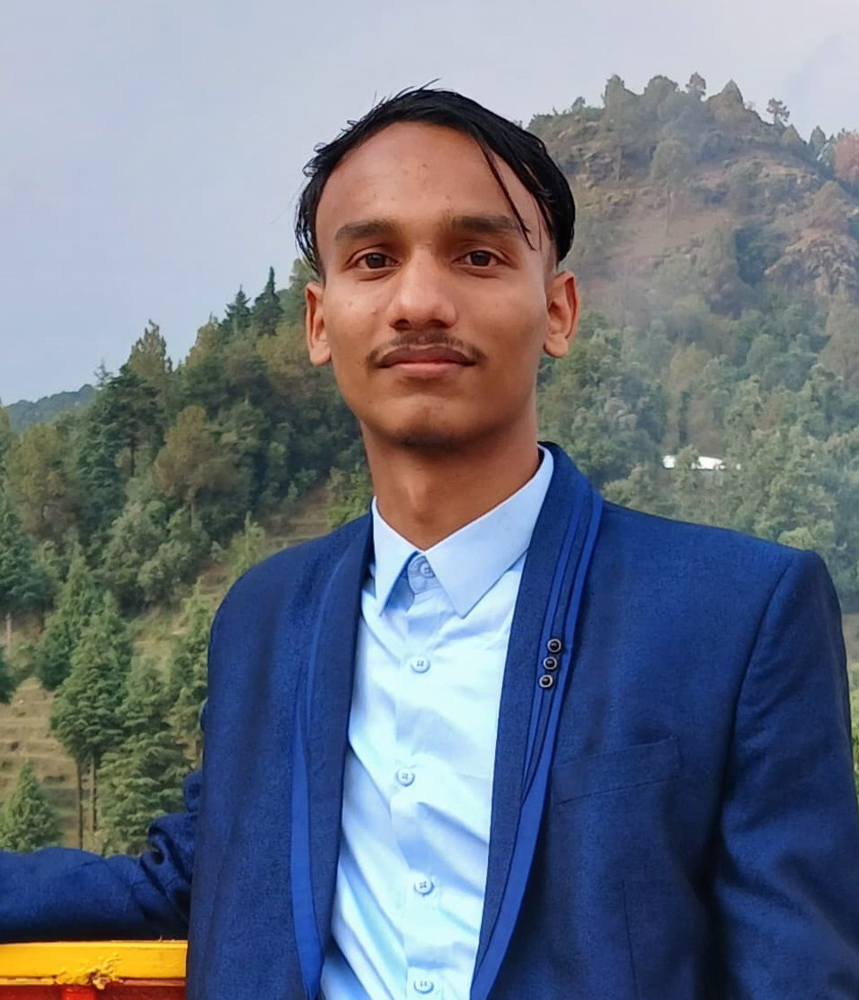
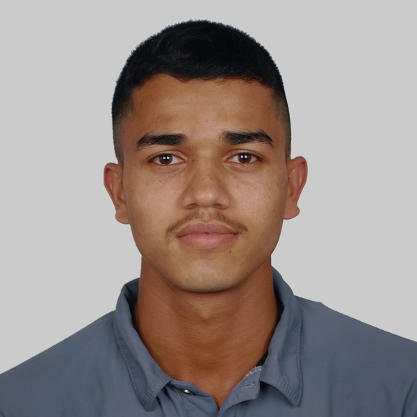
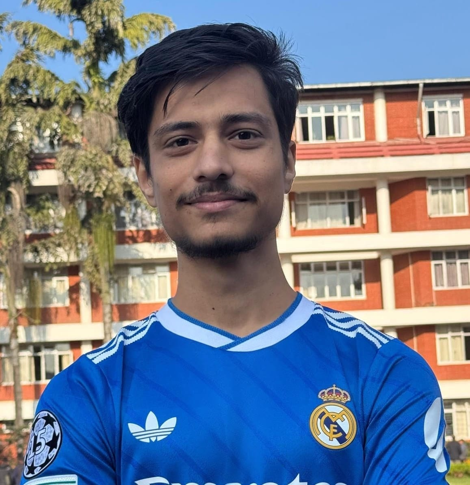
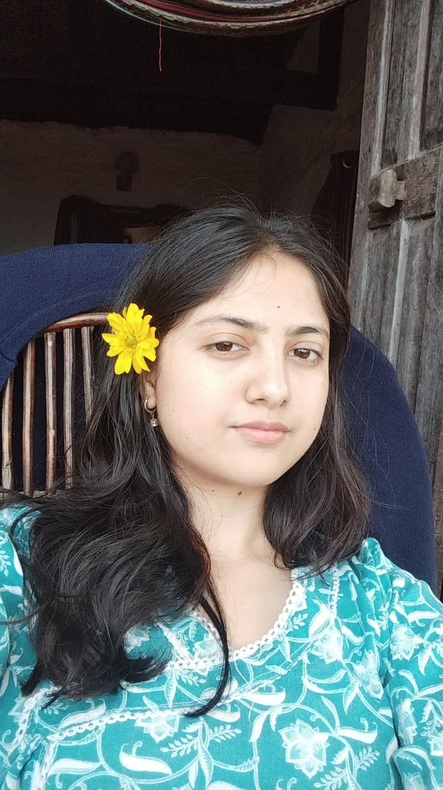
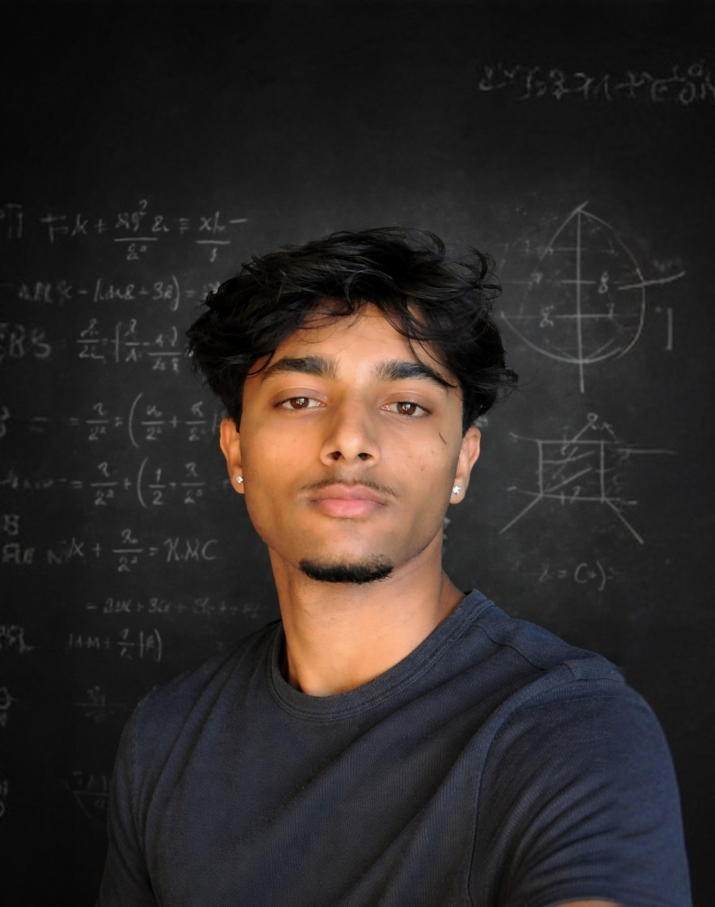
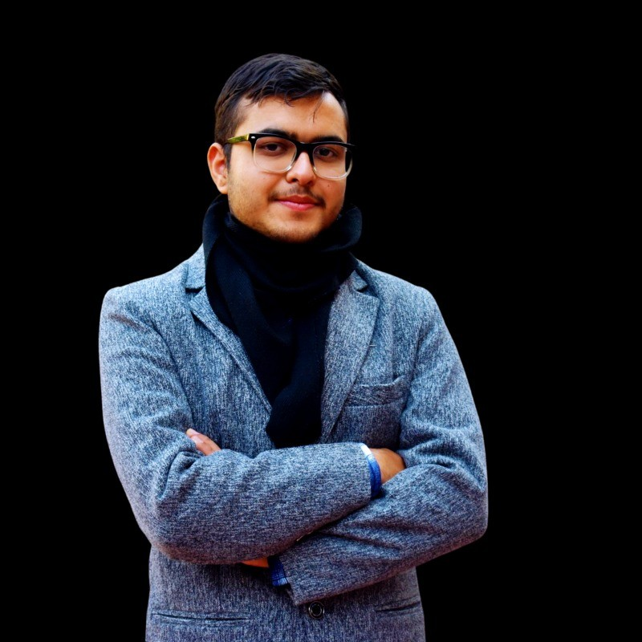

Manish Pandey
Plasma Physics

NSRF is a mentorship-driven fellowship connecting students with experienced mentors across seven research areas. Fellows develop research skills, explore open problems, and build a foundation for future academic and professional work.
Literature navigation, reference tools, critical reading, and LaTeX writing close with proposal presentations and group placement.
Fellows work with a dedicated mentor to finalize a topic and literature review, producing a joint proposal and paper outline.
Groups execute approved research with weekly meetings, progress reports, and rotating presentation duties.
Fellows present completed research to faculty, mentors, and partners. Certificates are awarded and qualifying groups receive publication guidance.
The fellowship is supported by mentors working across mathematics, physics, biology, materials, economics, and machine learning.

Plasma Physics

Biophysics

Materials Science

Astrophysics

Economics

Number Theory

AI & ML
NSRF is supported by NSSR's broader advisors team and invited experts who help the fellowship run smoothly. They provide program oversight, review research directions, and support mentors and fellows with field-specific guidance.
Advisors help coordinate the fellowship structure, milestones, symposium preparation, and overall research quality.
Experts across the fellowship fields help connect students with appropriate questions, methods, resources, and research standards.
The advisors team supports mentors with feedback and coordination so fellows receive consistent guidance throughout the program.
Advisors uphold research quality, ethics, and standards across all fellowship activities.
NSRF Fellowship Certificate at the closing symposium
Training in proposal writing, from defining a research question to preparing a clear, structured proposal
Collaborative research experience with defined team roles
Publication opportunities for selected projects